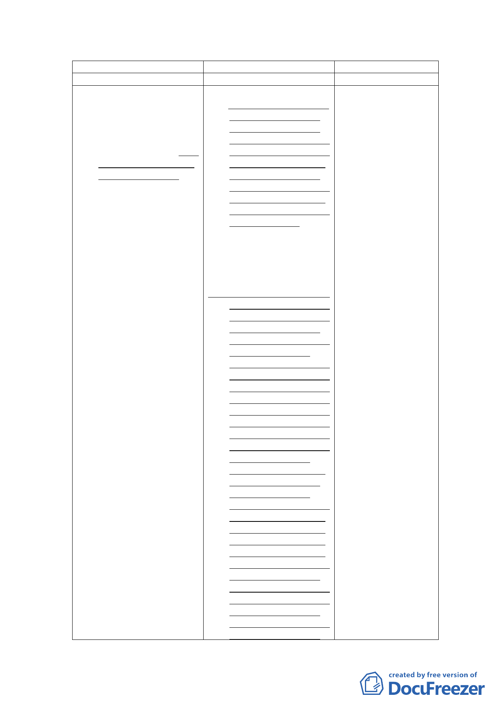

新計畫
陸、實施進度與經費
一、開發方式得採設定地上
權方式，交由民間廠商
開發興建與經營管理
（BOT），或由本府編
列預算經費開闢。並預
訂於103年起辦理規劃
設計及招標作業。
二、(刪除)
原計畫
管制。
陸、實施進度與經費
一、預定於民國95年起進行
廣慈博愛院及福德平
宅院民及現住戶安置
作業，並就優先騰空土
地進行簡易綠化，自民
國96至100年開始進行
本案基地社會福利設
施用地、商業區、公園
用地及道路用地 之開
發作業。本案應以整體
開發方式辦理，開發方
式得採設定地上權方
式，交由民間廠商開發
興建與經營管理
（BOT），或由本府編
列預算經費開闢。
二、本案BOT開發計畫係將社
會福利設施用地、公園
用地、道路用地及商業
區交由得標廠商整體
開發、營運及管理，預
計開發作為老人住
宅、養護中心、平價住
宅等社會福利設施，以
及地下停車場、附屬商
業設施等。預計96年辦
理招商，由得標廠商分
三期興建，其中第一期
興建公園（含地下停車
場）及附屬商業設施，
預計97年底開始施
工，100年完工營運，
第二期興建社會福利
設施（不含平價住
宅），興建時期自98年
至100年，第三期興建
平價住宅，預計自100
年施工至102年完成。
本案經評估以BOT方式
開發具財務自償性，工
程經費由得標廠商負
擔。本案未來之權利金
及租金收入，將納入本
府社會局未來成立之
社會福利發展基金，統
籌運用於社會福利支
說明
本計畫因相關開發時
程及開發方式均已不
同，爰配合修正相關
文字。
- 12 -